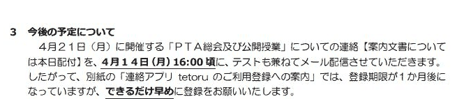

重点資料 · 確認事実から法的検証へ
徴収、支出、連絡。
学校が担う境界を確かめる。
大和中の委任契約への言及、北方中のtetoru、大和南中の協力費資料を重点対象にします。原本確認済みの事項と、再取得待ちの事項を分けて示します。
原本指定箇所確認 · 大和中
会費徴収と支出の委任
3336365の集金表・注記4。契約書への言及と契約書そのものを区別。
原本確認・画像あり · 北方中tetoruとPTA総会案内
学校アプリへの登録とPTA加入を分け、公務と契約を二重に点検。
原本再取得待ち · 大和南中
協力費と学校徴収金
過去調査の候補を照合中です。この版では未確認の金額・年度・原文画像を掲載していません。
北方中：登録依頼と総会案内を同じ文書に

学校経由の書面議決との比較
木曽川中の確認済み案内は、議決書を2023年4月28日までに子どもの学級担任へ提出する手順を記載。兄弟姉妹がいる場合は上の学年の担任としています。学校職員がPTAの意思決定の回収事務を扱える根拠と、回答情報の取扱いを検討します。
総会結果の関連資料は本文再確認が残るため、案内の記載から結果を推測しません。
加入意思の確認も、実際の手続まで
大和東小は任意加入の説明と全員への加入勧誘、学校教頭の窓口を分けて検証します。赤見小は原本再取得が必要なため個別の原文・分析を公開用に収録していません。